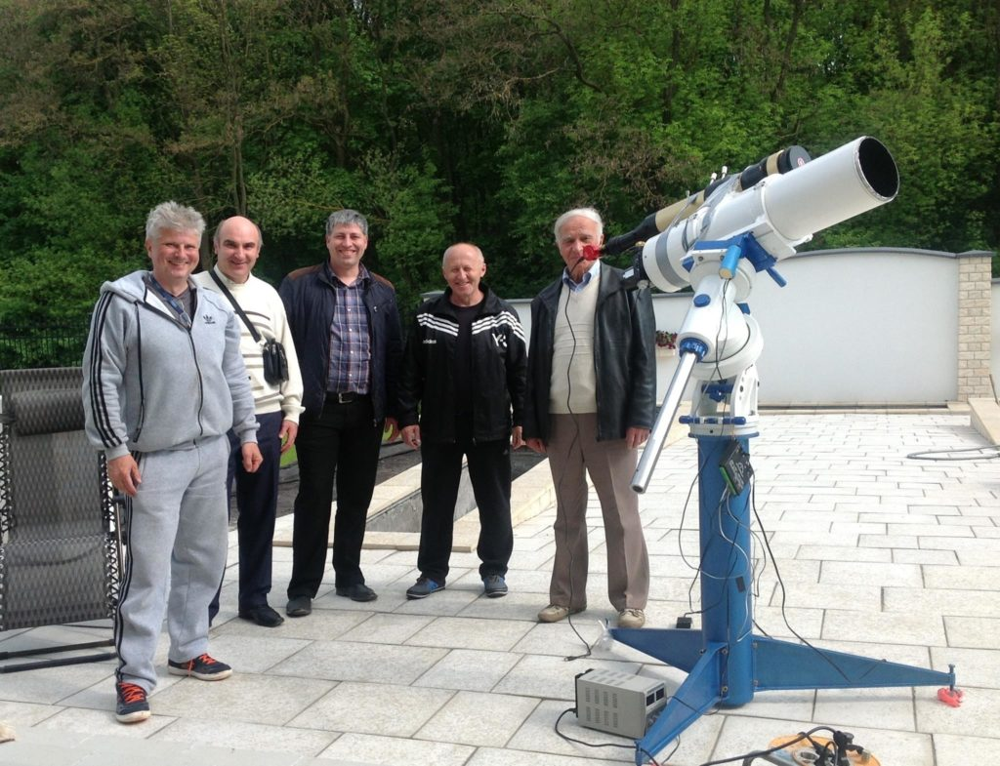
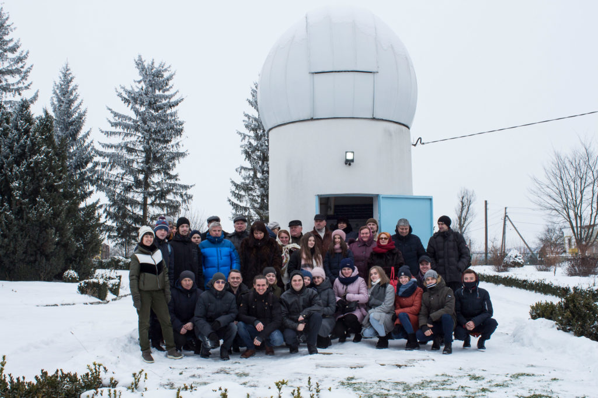

З 2017 року члени Астрономічного товариства Тернопільського району “Небозвід” тісно співпрацюють з учасниками клубу любителів астрономії “ТерАстро”.
Учасник клубу ЛА “ТерАстро” Сергій Вербицький та члени Астрономічного товариства Тернопільського району “Небозвід” Любомир Тригубишин, Василь Михайленко, Михайло Шемеля.

Член Астрономічного товариства Тернопільського району “Небозвід”, вчитель фізики та астрономії НВК “Лозівська ЗОШ І-ІІІ ст -ДНЗ” та ідейний натхненник будівництва обсерваторії в селі Лозова Михайло Шемеля.
Члени Астрономічного товариства Тернопільського району “Небозвід”, учасники клубу ЛА “ТерАстро”, учні та вчителі шкіл Тернопільщини під час Астрофесту “Різдвяні зорі” в селі Лозова, 2019 р.
Новини Астрономічного товариства Тернопільського району “Небозвід” можна переглянути за посиланням https://nebozvid.blogspot.com